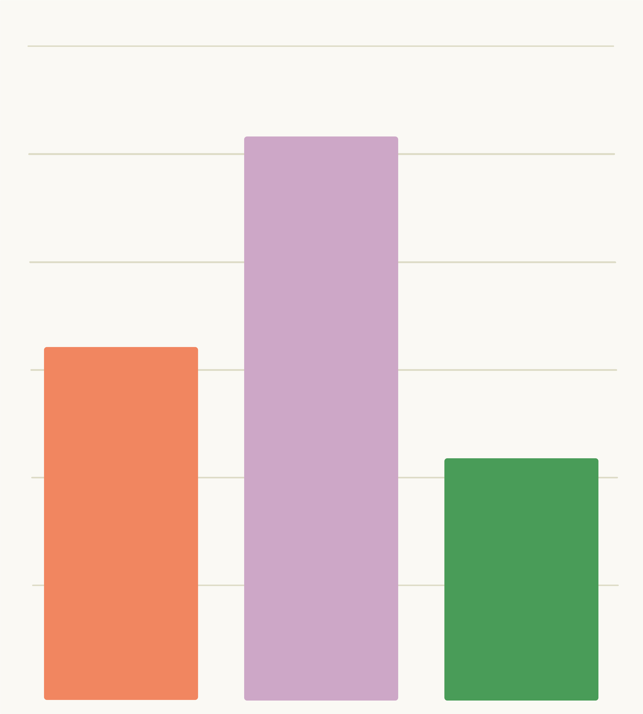

Invalid Date
No pre-requisites.
Related modules are any that handle data, particularly:
R project management
Data acquisition
Data management

Let’s get talking about archiving our work!
Think about the following questions…
Discuss your thoughts with your neighbours…
Write some ideas…
Post these and have a look at the other posts
25 minutes!
What do you think?
Let’s go through a few of the answers - can I have a volunteer for each of the four questions to read out just a few of the post-its?
Support open science
Transparency
Reinforce good practices
Reproducibility and replicability
Reusability for future research
Future You
Citeability
Prevent duplicated efforts
Everything!
…that is possible, within reason.
Raw and processed data
Code
Supplementaries
Workflow
Thoughts and feelings…
What the material is and what it is for
Explanation of contents
How to collaborate with you
Some relevant examples:
Zenodo
Dryad
FigShare
Pangaea
Institutional / funding body repositories
Specialist data: PBDB, Neotoma, MorphoSource, MorphoBank, …
Software: GitHub
Can anyone tell us some of the things we need to consider when we decide which repository to choose for archiving?
A freebie: not all repositories are free.
Not all repositories are the same; they can vary in:
Longevity
Cost
Capacity
Accessibility
Discoverability
Version control
Licensing
We must choose an appropriate license when archiving, and there are many options:
CC0 (public domain)
Variety of CC-BY
Software licenses: MIT, Apache, GNU
Check your work / grant contract!
Tools for deciding: https://choosealicense.com , https://creativecommons.org/chooser/
Diamond open access journals (palaeontology-specific):
Open Palaeontology
Lethaia
Palaeontologia Electronica
Sedimentologika
Preprint servers (e.g., bioRxiv, EarthArXiv, EvoEcoRxiv)
Peer Community in Paleontology
See specific slides for more links to open science journals, repositories, etc.
Tools for licenses: https://choosealicense.com , https://creativecommons.org/chooser/
Peer review preprint platform: Peer Community in Paleontology
Find open access journals: Directory of Open Access Journals (DOAJ)